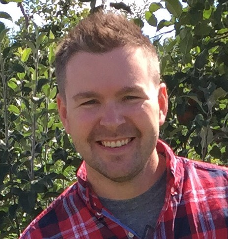

<app-section
  header="About me"
  [fullScreen]="expandFullScreen"
  [marginBottom]="true"
  [codeBlock]="{ methodName: 'detailSelf', returnType: 'string' }"
>
  <div class="flex flex-wrap">
    <div class="w-full md:w-1/2">
      <p class="py-5 leading-relaxed md:max-w-prose">
        I'm an open source developer advocate. Currently, I co-lead the Open Source Program Office at
        <app-link href="https://www.progressive.com/">Progressive</app-link>. Any day I can help make something a bit
        easier for another developer is a great day.
      </p>
      <p class="pb-5 leading-relaxed md:max-w-prose">
        As a developer, my passion is around making great web apps and easy to consume API. Developing web apps is a
        chance to enjoy the blending of science and art. Being creative while considering usability, accessibility,
        inclusivity, and simplicity is perfection, like a delicious bowl of hot ramen 🍜.
      </p>
      <p class="pb-5 leading-relaxed md:max-w-prose">
        Recently, I had the amazing opportunity to be part of a fireside chat with Stack Overflow. We talked about
        <app-link
          href="https://www.linkedin.com/posts/stack-overflow_webinar-recap-making-the-invisible-visible-activity-6894338693784588289-a1jn/"
          >Making the Invisible, Visible</app-link
        >, and how we've used Stack Overflow at Progressive to break down silos, uncover SMEs, and collaborate more
        effectively.
      </p>
    </div>
    <div class="mb-4 w-full md:flex md:w-1/2 md:justify-center lg:items-center lg:justify-start lg:pl-4">
      <div class="relative md:h-80 md:w-80 lg:h-96 lg:w-96">
        <div class="absolute top-2 left-2 h-full w-full rounded bg-cyan-400" aria-hidden="true"></div>
        
      </div>
    </div>
  </div>
</app-section>
